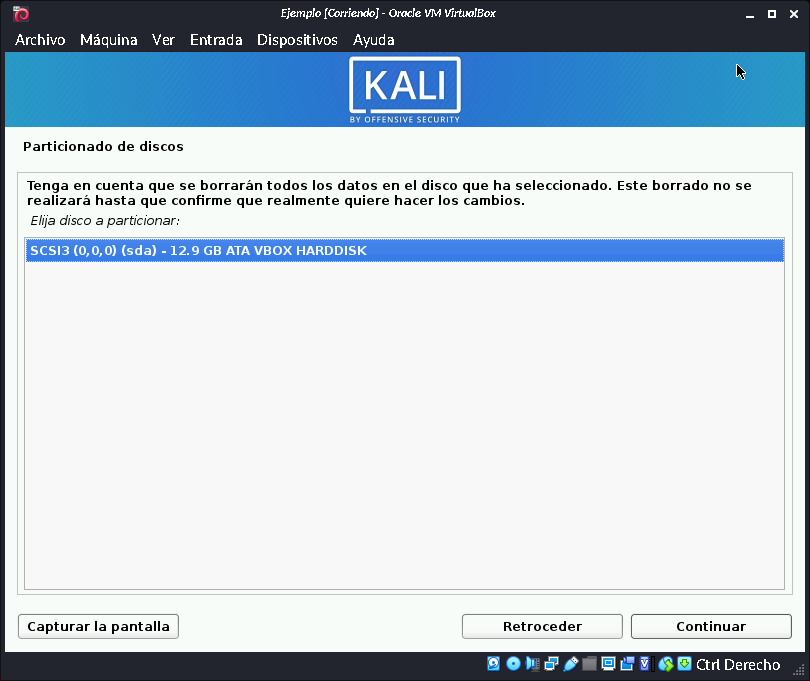
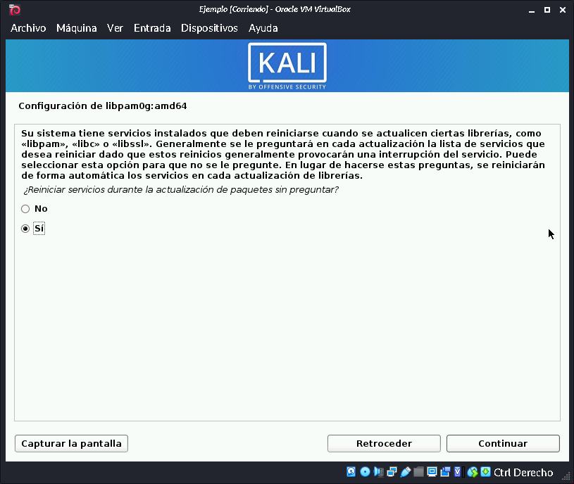
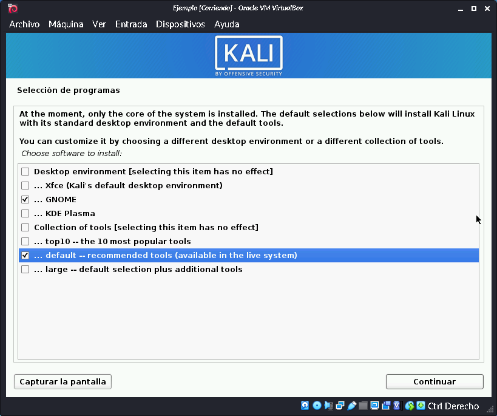
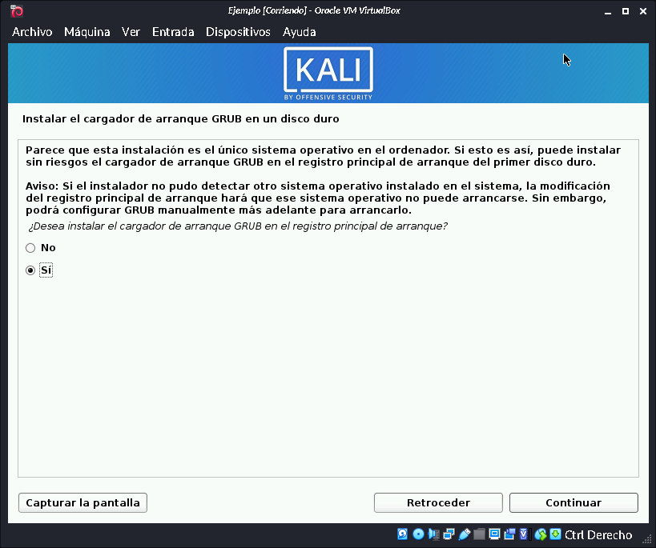

Instalación de Sistemas Operativos
Instalación de Windows
Instalación de Kali linux
En este caso usamos la actividad 5 para llegar a este punto
1.- Seleccionamos graphical install para que que sea mas facil configurar
2.- En esta pantalla seleccionamos el idioma para el sistema
3.- En esta pantalla seleccionamos nuestra ubicacion
4.- En esta pantalla seleccionamos la distribucion de nuestro teclado
5.- Se instalaran algunos paquetes basicos
6.- Añadiremos un nombre para la maquina
7.- Añadiremos un nombre de dominio para la maquina
En este caso no tengo un dominio, por lo que lo dejare en blanco
8.- Añadiremos nuestro nombre para crear un usuario en la maquina
9.- Añadiremos nuestro nombre de usuario
9.- Añadiremos una contraseña para el usuario
10.- Seleccionamos la zona horario correspondiente
11.- Seleccionamos el tipo de particion, en este caso usare la configuracion predeterminada
12.- Seleccionamos la particion donde se instalara el sistema

13.- Seleccionamos el tipo de montaje de particion, en este caso solo tenemos una opcion asi que elegimos esa
14.- Finalizamos los ajustes de la particion
15.- Confirmamos los ajustes de la particion, seleccionamos "si" y luego presionamos continuar
16.- Iniciara con la instalacion del sistema base
17.- Nos preguntara si tenemos un proxy para acceder a internet, en este caso dejamos en blanco
18.- Continuara con la instalacion del sistema base
19.- Nos preguntara si deseamos que se reinicien los servicios de manera automatica durante la instalacion, seleccionamos si y luego continuar

20.- Continuara con la instalacion del sistema base
21.- Preguntara el tipo de escritorio que deseamos instalar y las herramientas que estan disponibles en este caso seleccione lo siguiente

22.- Continuara con la instalacion del grub
23.- Preguntara si instalar el grub en el registro principal, presionamos si y continuar

24.- Seleccionamos el disco duro donde se va a instalar el grub
25.- Con esto terminamos la instalacion